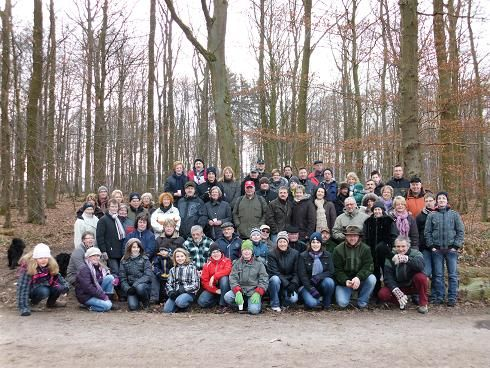
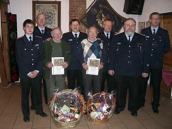
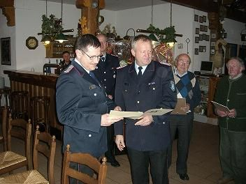
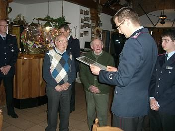

Archiv – 2011
Winter-Tradition pur: Grünkohlwanderung 2011
Wie in jedem Jahr war die Vorfreude bei Jung und Alt riesig – und die Resonanz war überwältigend:
Gleich 50 Wanderlustige machten sich dieses Jahr gemeinsam auf den Weg. Bei perfektem Wanderwetter
mit klirrend kühler Luft, strahlendem Sonnenschein und klarer Sicht führte die Route etwa zwei
Stunden lang durch unsere heimischen Wälder.
Zur Halbzeit durfte die traditionelle Rast natürlich nicht fehlen: Mit heißen und kalten Getränken
stärkte sich die Gruppe für das letzte Teilstück. Das Ziel vor Augen, kehrten gegen Mittag alle
in die Gänsetränke ein. Bei deftigem Grünkohl und in bester Gesellschaft ließen wir den Tag noch
viele gemütliche Stunden lang ausklingen.

Jahreshauptversammlung 2011: Ein Jahrhundert-Jubiläum im Doppelpack
Die Jahreshauptversammlung 2011 wird uns als ein Abend der ganz großen Ehre in Erinnerung bleiben.
Es kommt selten vor, dass man eine Treue von sieben Jahrzehnten feiern darf – doch in diesem Jahr
durften wir gleich zwei Kameraden für ihre stolze **70-jährige Mitgliedschaft** auszeichnen:
Heinrich Sporleder und Friedrich Hoffmeister. Eine lebenslange Verbundenheit, die uns alle tief beeindruckt!
Besondere Anerkennung gab es auch für Hans-Erich Knischewski, dem für seine Verdienste die
Verdienstnadel in Bronze verliehen wurde. Begleitet wurden die Ehrungen durch hohen Besuch:
Kreisbrandmeister Hans-Hermann Brand, Gemeindebrandmeister Dirk Siefarth und unser
Ortsbrandmeister Marco Eikhoff würdigten die Leistungen der Kameraden persönlich.
Zuwachs und Aufstieg in der Einsatzabteilung
Auch in der aktiven Truppe gab es Grund zum Feiern: Sebastian Pietsch wurde zum Feuerwehrmann ernannt
und Dirk Schünemann stieg zum Hauptlöschmeister auf. Herzlichen Glückwunsch an alle Geehrten
und Beförderten für ihren Einsatz zum Schutz unserer Gemeinde!


